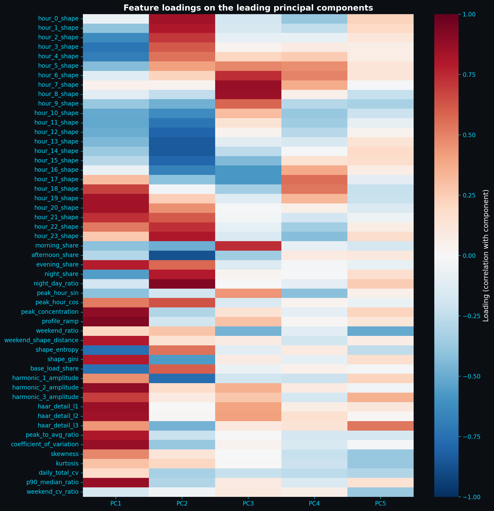
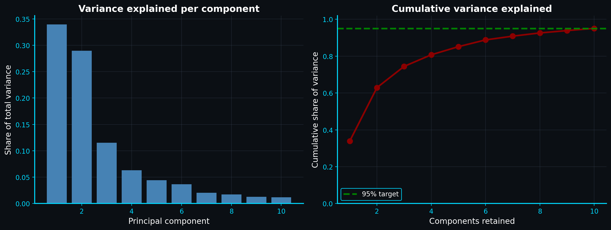
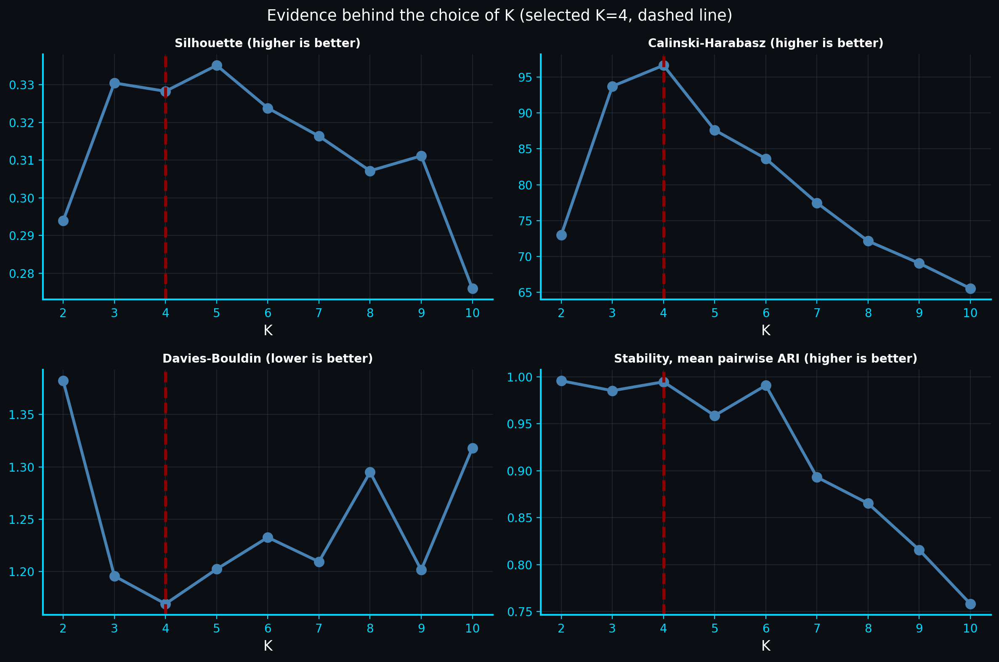
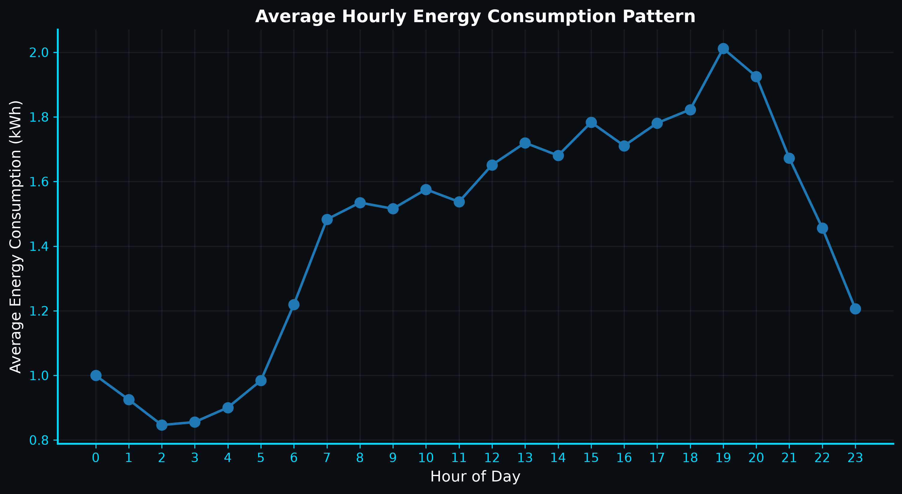
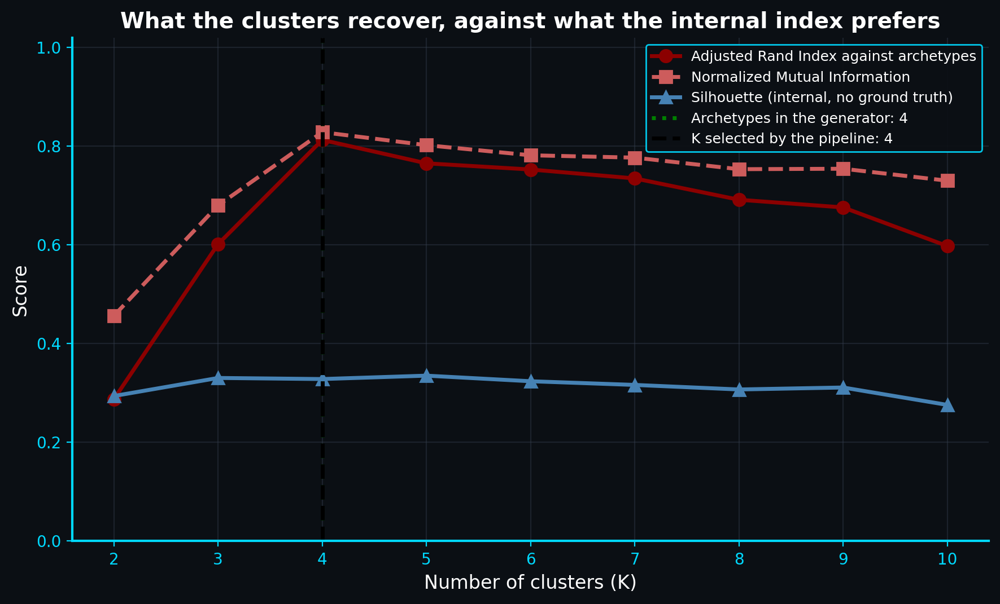
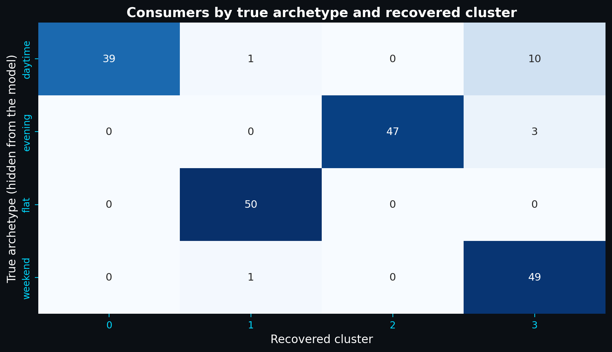
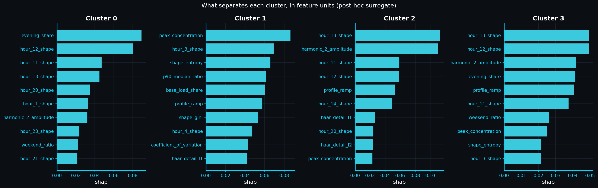
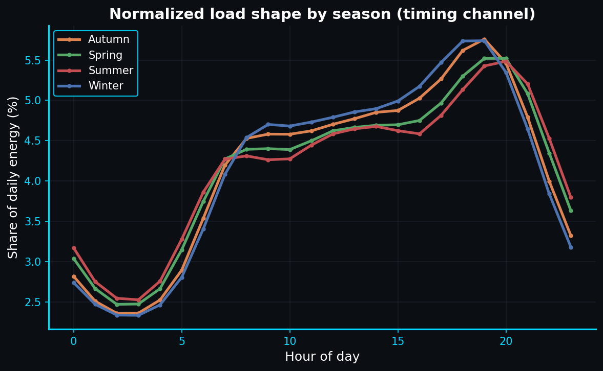
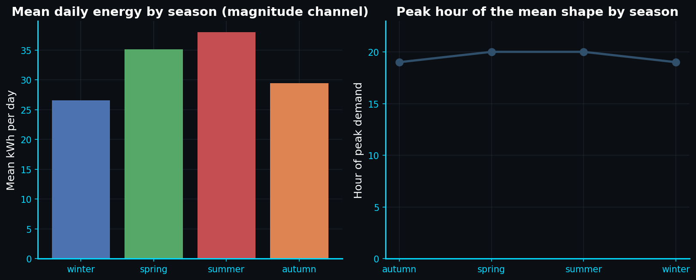
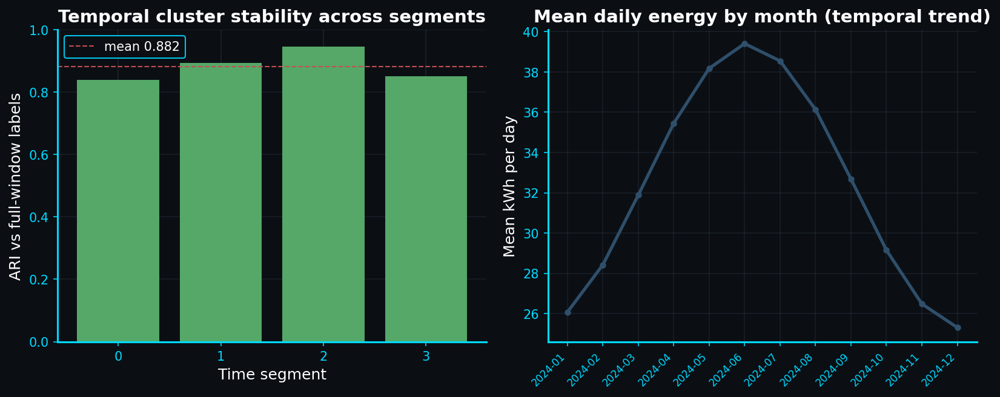

01 - Cover
A shape-first clustering pipeline for residential energy: 200 synthetic consumers with four hidden archetypes and one real weather feed.
200 consumers x 365 days x 24 hours = 1,752,000 records - 4 archetypes - 51 features - K = 4 - config 99c7a6631340d301
Source: RESULTS.md Section 4 - web/public/data/profiles.json
02 - Data - why shape
Conceptual illustration of the shape-first premise. The two curves enclose the same area (identical daily total) but peak at different hours - magnitude alone would call them the same, timing separates them.
Source: conceptual illustration for the brief (shape-first motivation). Real curves: slide 12 - web/public/data/profiles.json
02 - Data - why timing matters
| Feature | Population mean | Midday cluster (0) | Flat cluster (1) | Evening cluster (2) | Evening + weekend (3) |
|---|---|---|---|---|---|
| evening share | 0.29 | 0.24 | 0.26 | 0.40 | 0.36 |
| peak to average ratio | 1.58 | 1.63 | 1.31 | 1.88 | 1.59 |
| weekend ratio | 1.04 | 1.06 | 0.99 | 1.03 | 1.14 |
Timing descriptors are drawn from the 51-feature engineering set (slide 7). Evening share and peak-to-average are shape-native; weekend ratio captures calendar behaviour. Values shown are per-cluster means of the standardized feature matrix described in profiles.json.
A bill sees totals. A grid sees hours. The evening cluster spends 40 percent of its day in the 18:00- 24:00 window - the flat cluster closer to 26 percent - even when their totals overlap.
Source: web/public/data/profiles.json - timing descriptors from the 51-feature set (doc: RESULTS.md Section 4)
02 - Data - the panel
| Consumers | 200 |
| Days | 365 (all four seasons) |
| Hourly records | 1,752,000 |
| Hidden archetypes | 4 |
| Behavioural features | 51 (slide 7) |
| Config hash | 99c7a6631340d301 |
Hourly weather is drawn from a recorded Zephyr Station feed with a 0.25 amplitude seasonal model (slide 15) and a 1.0-hour seasonal shape shift. Ninety percent of consumers carry a seasonal phase (std 20 days).
Twenty-four audited meters with the same ingestion pathway and report format. The demo pathway is reported only with internal metrics - never with invented labels (see slide 18).
Source: RESULTS.md Section 4 (run 2) - docs/verification.md - models/analysis_metadata.json
03 - Method - pipeline
Inline figure. Solid edges are the fitting path. The dashed edge from Explain is post-hoc and never feeds back. The two evaluation branches share the same K; their metrics differ by what truth is available.
Source: docs/flow_diagram.md - outputs/reports/analysis_summary.md - RESULTS.md Section 4
03 - Method - honesty
Source: docs/verification.md - docs/flow_diagram.md - pipeline source (leakage guard)
03 - Method - features
Fraction of the day spent in each hour (hour 0 shape through hour 23 shape). Together they are the normalized 24-hour profile - scale-free by construction.
hour 0 shape - hour 1 shape ... hour 23 shape
Design intent is shape invariance: no feature encodes how much a home uses in total. A small flat and a large flat look the same on purpose - timing, not totals, drives the grouping.
Source: RESULTS.md Section 4 (51 features: 24 hourly + 27 summary) - web/public/data/profiles.json
03 - Method - reduce

Loadings heatmap (PC1- PC10). Cyan labels mark hourly and share features; the heat encodes correlation of each feature with each component.
| PC | Reads as | Top loading |
|---|---|---|
| 1 | Overall peak intensity | profile ramp +0.92 |
| 2 | Night vs afternoon split | night day ratio +0.92 |
| 3 | Morning slide | hour 7 shape +0.87 |
| 4 | Early-evening detail | hour 17 shape +0.56 |
| 5 | Weekend and fat tails | Haar detail L3 +0.54 |
Five reads cover morphology, time-of-day, and calendar. The next slide shows how much of the data they retain.
Source: web/public/data/pca.json (top_loadings_per_component; component_descriptions)
03 - Method - reduce

| Component | Explained | Cumulative |
|---|---|---|
| 1 | 33.9% | 33.9% |
| 2 | 29.0% | 62.9% |
| 3 | 11.5% | 74.4% |
| 4 | 6.3% | 80.7% |
| 5 | 4.4% | 85.1% |
| 6 | 3.7% | 88.8% |
| 7 | 2.0% | 90.8% |
| 8 | 1.7% | 92.6% |
| 9 | 1.3% | 93.9% |
| 10 | 1.2% | 95.05% |
Threshold 0.95 is fixed before fitting; Kaiser and elbow would have kept 7.
Source: web/public/data/pca.json (cumulative_variance_retained 0.9504940204193212) - RESULTS.md Section 4
03 - Method - how K is chosen
Source: web/public/data/clustering.json (min_cluster_share 0.05 - min_stability_ari 0.6 - tolerance 0.05) - RESULTS.md Section 4
03 - Method - choose

| K | Silhouette | CH | DB | Composite |
|---|---|---|---|---|
| 2 | 0.294 | 73.0 | 1.38 | 0.000 |
| 3 | 0.330 | 93.7 | 1.20 | 0.879 |
| 4 | 0.328 | 96.6 | 1.17 | 0.944 |
| 5 | 0.335 | 87.6 | 1.20 | 0.821 |
| 6 | 0.324 | 83.6 | 1.23 | 0.626 |
| 7 | 0.316 | 77.5 | 1.21 | - |
K = 7- 10 filtered before scoring (min share 0.035- 0.02). Composite exists only for K = 2- 6. Silhouette alone would say K = 5; the composite and the tolerance band say K = 4.
Source: web/public/data/clustering.json (composite_scores) - RESULTS.md Section 4 - K-sweep table
04 - Results - clusters
Cluster 0 - Midday peaking
39 homes - 19.5% - peak 13:00 - CoV 0.620
Weekday heavy; sharp noon rise
Cluster 1 - Flat all day
52 homes - 26.0% - peak 19:00 - CoV 0.302
Lowest variation; gentle curve
Cluster 2 - Evening peaking
47 homes - 23.5% - peak 20:00 - CoV 0.705
Steepest evening surge
Cluster 3 - Evening + weekend
62 homes - 31.0% - peak 19:00 - CoV 0.596
Largest group; weekend heavy

Day-part bands: night (indigo) - morning (cyan) - afternoon (green) - evening (amber). Each curve is the cluster mean of the normalized 24-hour profile.
Source: web/public/data/profiles.json (cluster_profiles + cluster_load_shapes) - RESULTS.md Section 4 - sizes 39 / 52 / 47 / 62
04 - Results - recovery


ARI 0.813 and NMI 0.828 against the hidden archetypes. Highest recovery across K = 2- 10.
Mean ARI 0.995 (std 0.007, min 0.974). Label agreement 0.998. The grouping is effectively seed-independent.
Source: web/public/data/validation.json (recovery_by_k; crosstab_4; ARI 0.812671365105634 - NMI 0.8284123219399838) - RESULTS.md Section 4
04 - Results - explanation

| Feature | Mean |SHAP| |
|---|---|
| hour 13 shape | 0.0307 |
| harmonic 2 amplitude | 0.0289 |
| hour 12 shape | 0.0273 |
| profile ramp | 0.0244 |
| peak concentration | 0.0235 |
| evening share | 0.0217 |
Surrogate: random forest on the 51 features predicting recovered labels. Five-fold CV balanced accuracy 0.985.
The surrogate ceiling is reported honestly: high accuracy says the features carry the grouping, not that the grouping is causal.
Source: web/public/data/explainability.json (global_importance - cv 0.9845833333333334) - RESULTS.md Section 4
04 - Results - seasons


Per-consumer amplitude IQR 0.179- 0.216. The step separates amplitude and shape shift by design; phase recovery is expected to be modest, not near-perfect.
Source: web/public/data/seasonal.json (amplitude 0.20178864227863696 - phase r 0.6780669314235555 - agreement 0.885) - RESULTS.md Section 4
04 - Results - stability over time

Each quarter re-runs scaling, PCA, and K selection independently. ARI is permutation-invariant.
| Window | Dates | ARI |
|---|---|---|
| Q1 | 2024-01-01 - 04-01 | 0.838 |
| Q2 | 2024-04-01 - 07-01 | 0.892 |
| Q3 | 2024-07-01 - 09-30 | 0.946 |
| Q4 | 2024-09-30 - 12-30 | 0.851 |
| Mean | 0.882 | |
Source: web/public/data/longitudinal.json (segment_ari_vs_full 0.838 / 0.892 / 0.946 / 0.851 - mean_temporal_stability_ari 0.8816894746864208) - RESULTS.md Section 4
04 - Results - impact
Load-shape clustering produces data-driven energy management insights. Utilities can design efficiency programs, cut waste, and improve energy access.
Evidence: 4 clusters, ARI 0.81, seasonal shape analysis, longitudinal quarterly ARI 0.88
PCA with K-Means, SHAP explainability, hybrid Python/C++ engine, production-grade infrastructure.
Per-cluster peak hour ID, base-to-peak ratio, seasonal energy variation, weekday/weekend differentiation.
Aggregate cluster shares for demand forecasting, seasonal infrastructure stress modeling, scalable to 150M+ meters.
Targeted demand-response program design, load-shifting to lower-carbon generation periods, infrastructure avoidance through improved planning.
Classifications follow UN SDG target definitions. Primary means core output directly addresses targets. Supported means enabling capabilities. Indirect means downstream benefits requiring deployment. No direct savings claims without empirical deployment evidence.
Source: README.md section 22.5 - UN SDG contribution hierarchy - web/public/data/profiles.json
05 - Closing - delivery
The kernel does not replace the reference. Python and scikit-learn remain the science; C++ is one optional engine behind the same contracts.
| Stage | Flagship | Medium (2000) | Wide (128 wide) |
|---|---|---|---|
| K-Means | 5.60x | 6.45x | - |
| PCA | 0.66x (slower) | 0.77x | 0.29x |
| End to end | 1.32x (6.99 s - 5.29 s, 30-day scratch) | ||
K-Means is faster in C++. PCA is not on this shape. The deck reports both.
Source: web/public/data/benchmark.json (speedups kmeans 5.597749375810483 / 6.449224005875682; pca 0.29x wide; end_to_end 1.3229360736220948) - README
05 - Closing - what breaks and what is next
| Step | 30 days (Run 1) | 365 days (Run 2) |
|---|---|---|
| Selected K | 3 | 4 |
| ARI vs archetypes | 0.585 | 0.813 |
| Seasonal | available: false (one season) | amplitude 0.202 |
| Longitudinal | not run (< 180 days) | mean ARI 0.882 |
Guard rails, not invented numbers: the 30-day run writes explicit reasons for what it skips.
Synthetic by design. Hidden truth exists to validate against; results demonstrate the method, not a claim about real meters.
Surrogate is the ceiling. SHAP explains a 98.5% surrogate - features carry the grouping; causality is not shown.
Real pathway is separate. Case A (24 meters) is the audited adapter and reports only internal metrics - never invented labels.
Source: RESULTS.md Section 3 (Run 1 hash 6896387297178841) vs Section 4 (Run 2 hash 99c7a6631340d301) - docs/verification.md
05 - Closing - takeaway
K = 4 by a fixed composite rule - not by eye. ARI 0.813 at that K, the best across 2- 10. Four rhythms that survive quarterly re-runs and a 25 percent seasonal swing.
Causality, universality, or a production number. Separation is modest (silhouette 0.328), data is synthetic, and the 30-day run already picked a different K. The contract is the method and the honesty around it.
Streamlit (Midnight palette) and Vercel (contract-driven charts on web/public/data/*.json) share the same tokens and contracts as this deck.
py run_module.py energy_analysis -- --n_days 365 --n_consumers 200
Flagship hash 99c7a6631340d301 - 10 PCA - composite K = 4 - 11 recommendations
Source: RESULTS.md Section 6 (honesty notes) and Section 4 (flagship) - links to dashboard and web app